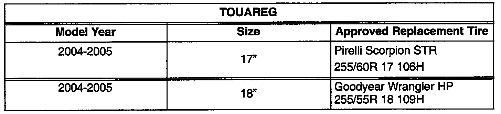

Tires - Poor Tread Life/Wear
Group: 44Number: 05-01
Date: July 1, 2005
Subject:
Replacement Tires
Model(s):
Touareg 2004 > 2005
Condition
Dissatisfaction with length of tread life/wear rate of OE tire application.
Service

The table contains information regarding two new factory approved replacement tires for Touareg vehicles which have an increased tread wear rating.
Applicable Warranty Coverage
Tires are not covered under the VWoA "New Vehicle Limited Warranty", with the exception of Article 4, Page 81, in the Policies and Procedures Manual where applicable.